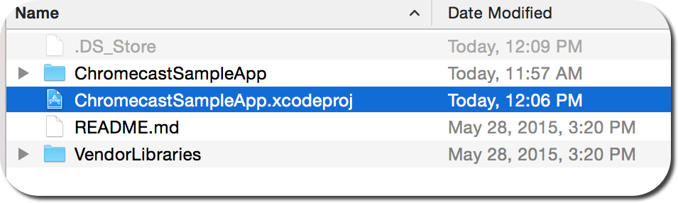
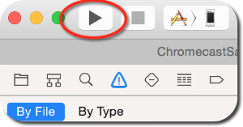
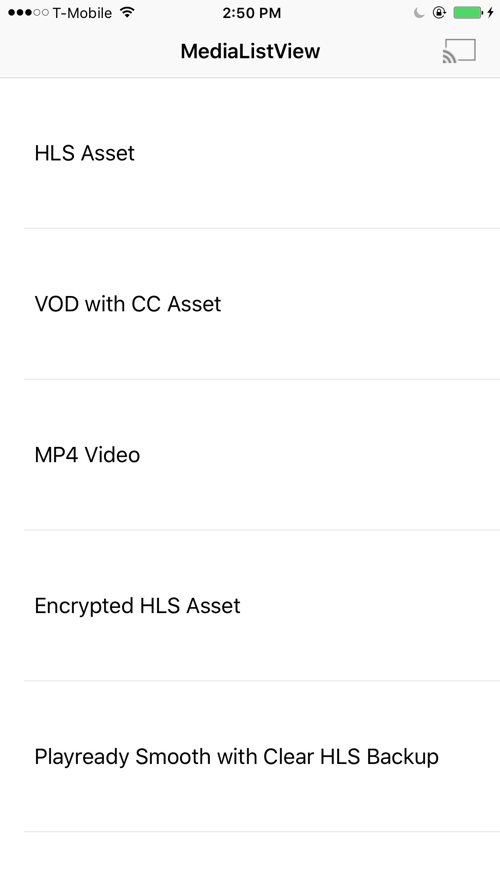

Ooyala provides a sample sender application for iOS that runs a working version of the sender and receiver components of the Ooyala Chromecast Integration.
Prerequisites
To perform the following steps to run the iOS sample application, you must have:- An Apple computer running the latest version of Xcode with a developer license installed.
- A receiver with the Chromecast module enabled.
- An iOS device running iOS 7 or newer with the Chromecast App installed and paired with the receiver. This process is well documented by following the set up steps that appear when the app is opened on the device.
Note: If you are repeating these steps, make sure the app is removed from your device before
beginning the second pass.
Steps for Running the Sample Sender Application for iOS
- Clone the Ooyala SDK for iOS Sample Apps repository.
- Navigate to the ios-sample-apps/ChromecastSampleApp directory on your local system.
- Open the ChromeCastSample App folder.
- Double click ChromecastSampleApp.xcodeproj to open the project in Xcode.

- Connect the iOS device to the computer.
- Go to the provisioning profile settings and select iOSTeam Provisioning Profile. If you
cannot configure the provisioning profile, see the Apple Support site topic, Creating Your Provisioning Profile.

- Make sure the test device is unlocked.
- Select the Play button. The app opens on your device, showing a list of playable videos:
- Tap the broadcast icon (in the top right corner) to select the Chromecast receiver.

- Tap to select the correct ChromeCast receiver from the list:

- Tap to select the video to send to the receiver.